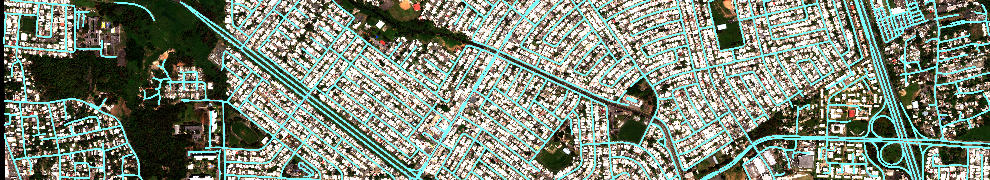
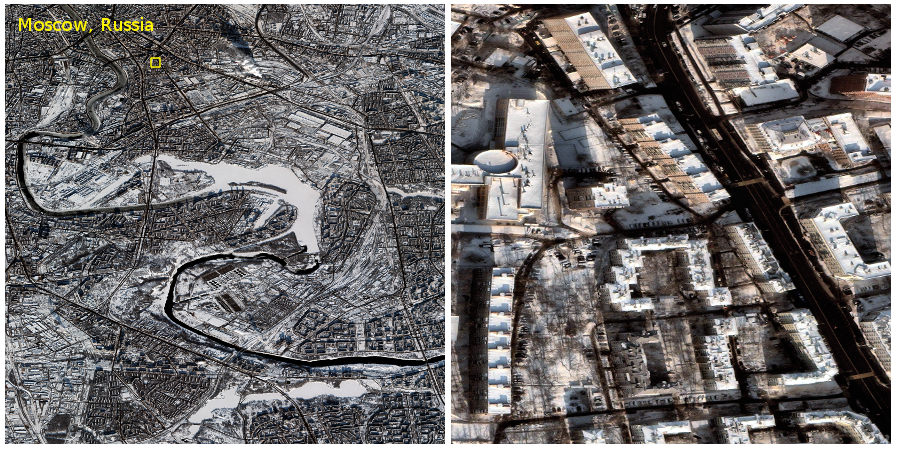
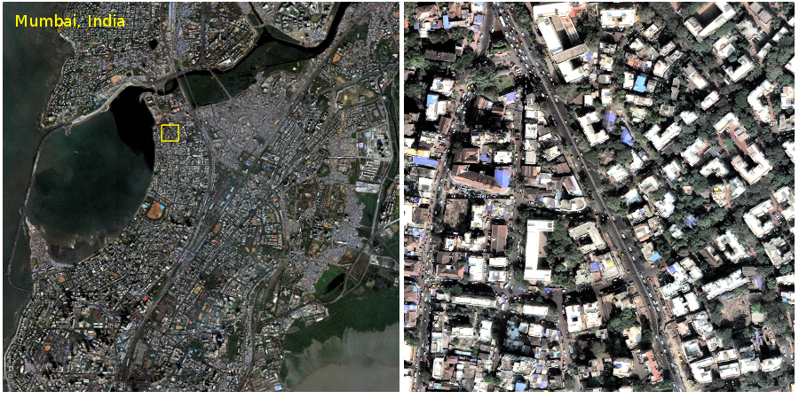
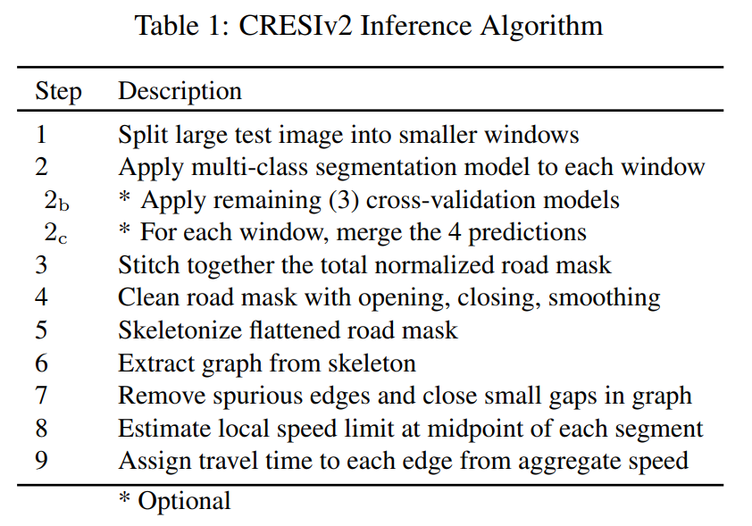
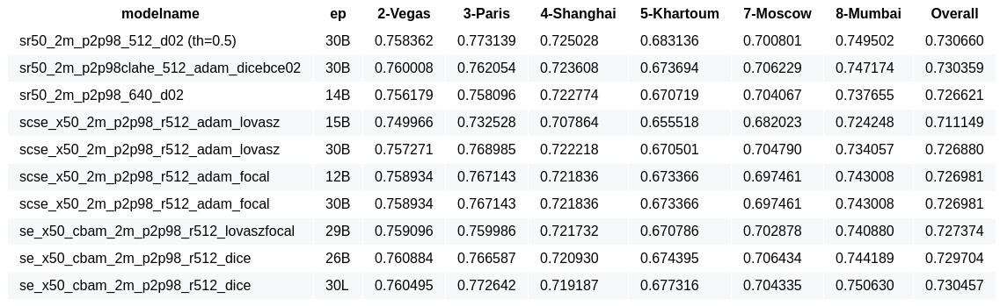
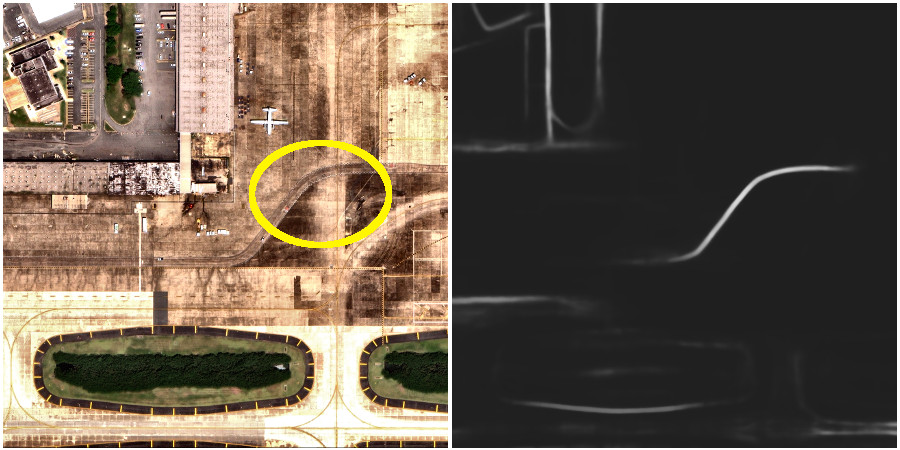
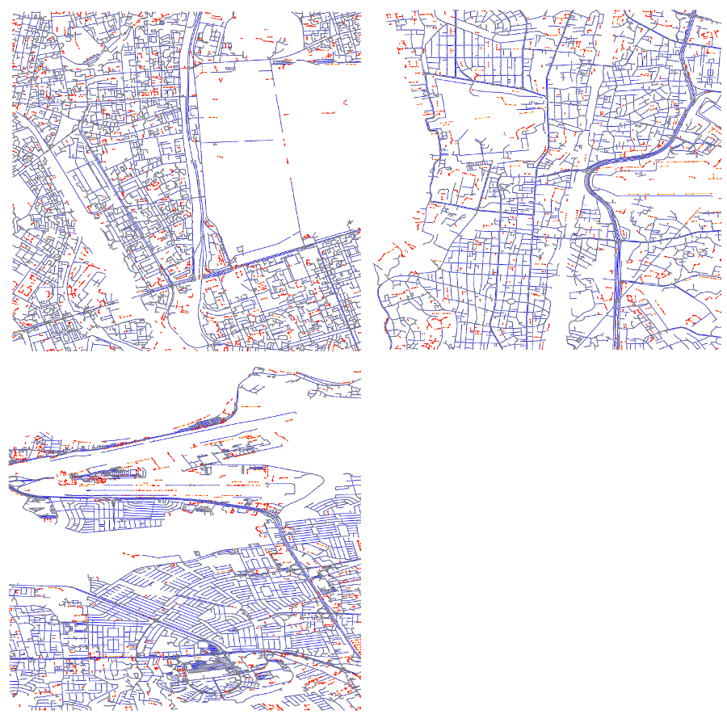
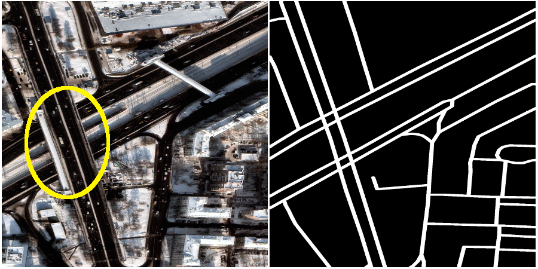
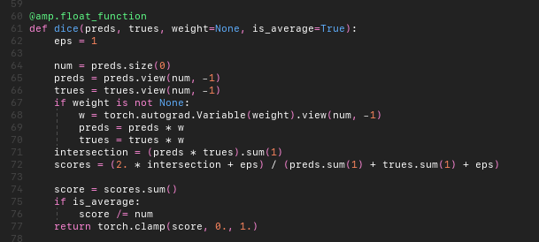
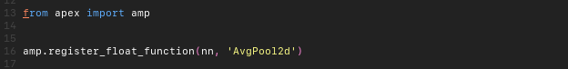

XD_XD's Solution for the SpaceNet 5 Challenge: Automated Road Network Extraction, Routing, and Travel Time Estimation

The English version is not ready yet. I'm working on it.
SpaceNet Challenge は CosmiQ Works, MAXAR, Intel, AWS, Capella Space, TopCoder, IEEE GRSS が協賛および主催するコンテストのシリーズです。第五回目となる SpaceNet Challenge Round5 では衛星画像から道路ネットワークの抽出、速度制限の推定、経路移動時間の推定を課題として、総額賞金 5 万ドルをかけて 2019年9月から3ヶ月の期間でコンテストが開催されました。今回、このコンテストで優勝を勝ち取ることができたのでコンテストで用いた解法を紹介します。
TL;DR,
- 単純な Semantic segmentation タスクではなく、道路ネットワークをグラフ構造として抽出して、ルーティングへの応用を想定したグラフ構造に対する評価指標が用いられた。
- 未知の都市に対してもロバストな推定ができるように、取得できるすべての都市で検証セットを作成した。
- 既存の手法 CRESIv2 のエラー分析を行い、道路ネットワーク抽出に特化した後処理を開発した。
コンテストの背景と課題
地図の整備は急速に発展している途上国においては十分になされていないことがあります。衛星画像から道路のネットワーク図を半自動的に生成することができれば、こうした都市に対していち早く対応でき、大幅に人手のコストを下げることができます。道路ネットワーク抽出は Computer Vision 分野における Semantic Segmentation タスクとして扱うことが多くありますが、Semantic Segmentation で用いられている IoU (Intersection over Union) は道路ネットワークの抽出という目的には適切ではありません。本来欲しい情報は道路ネットワークのグラフ的な情報です。そのため、Semantic Segmentation により抽出した Prediction mask を頂点とエッジの集合で構成されるグラフに変換した上で、物理的な位置関係の一致とグラフの近さを定量評価する APLS metrics が過去のコンテストの評価指標として開発され、今回のコンテストでも用いられました。 SpaceNet Challenge Round 5 は、道路ネットワークの抽出から更に道路の速度制限も推定することを求めるタスクで競われました。道路の速度制限がわかれば、頂点間の移動時間を大雑把に見積もることが可能となります。
データは MAXER 社の光学衛星 World-View 3 が撮影した高解像度画像 (GSD=0.3m)、Pan-sharpened Multispectral, Pan-sharpened RGB 画像が提供されました。このコンテストでは訓練データは 6 都市、ラスベガス(アメリカ)、パリ(フランス)、上海(中国)、ハルツーム(スーダン), ムンバイ(インド)、モスクワ(ロシア) から与えられ、テストデータとしてムンバイ(インド)、モスクワ(ロシア) に加えてサン・フアン(プエルトリコ) と非公開の都市が用いられました。特定の都市にのみ適合するのではなく、未確認の都市に対しても適用可能なロバストなモデルの開発が求められるという点で、チャレンジングなコンテスト設計がなされていました。 以下はムンバイとモスクワの衛星画像の例です。
 画像から見てわかるように、モスクワは冬の積雪状態の画像が与えられています。衛星画像は季節や大気などの気象条件、撮影時間、センサーの入射角など様々な条件で見え方が変化します。これは特定の写真に過剰適合するリスクにもなります。
最終評価はムンバイ、モスクワ、サンファンの一部と非公開の都市で撮影された画像で評価されます。 評価の比重は非公開の都市におけるスコアが大きく振られており、未知の都市に対してもロバストなモデルを開発することが重要なポイントでした。 参加者は計算リソースの制約条件を満たした Docker 化されたコードをコンテスト期間中に用意し、主催者がモデルの訓練と推論を行うという枠組みで競技が行われました。
Baseline: CRESIv2 Inference Algorithm
このコンテストのベースラインは過去の道路ネットワーク抽出コンテストの優勝者 (albu) の解法を改良・発展させた非常に強いアルゴリズムが用いられました。これは速度制限と道路ネットワークを multi-class semantic segmentation タスクとして扱い、道路として不自然なシングルトンなどを取り除く後処理を組み合わせたアルゴリズムです。以下は論文で記述されているアルゴリズムとなります。 
どのように勝利したか
主催側のブログにて既にいくつかの結果の分析や比較がされています。私がやったことを紹介しつつ、なぜ勝利できたのかを考察します。
- Announcing the Winners of the SpaceNet 5 Challenge
- SpaceNet 5 Results Deep Dive Part 1 — Geographic Diversity
Validation: 暫定順位表 (Public Leaderboard) で用いられるスコアに特化しすぎない Validation set によってモデルを選択したこと、 最終評価で用いられたAPLS と連動する指標で判断したことが重要であったと考えています。 最終評価では未知の都市によるスコアの比重がとても高いため、特定の都市に過剰適合しないようにすべての都市を使って Validation set を作成しました。
モデルの選択には全都市それぞれの validation set で DICE score を計算し、その平均で判断しました。最終的な評価指標は APLS ですが、後処理のアルゴリズムを変更しない限りにおいて、APLS と Dice は連動する関係にあったため（順序相関が高いため）、より計算コストの軽い Dice を見て判断しました。以下の表はモデルを開発＆評価した際に実験結果を管理したものです。 最終的にはこの表と実行時間を加味して、SE-ResNeXt50 と ResNet50 を validation set ごとに学習した合計 8 モデルを使いました。
Post-processing: CRESIv2 の後処理に加え、大域的な後処理を実装して適用しました。 一般的に考えて、任意の道路（エッジ）は大きなグラフと接続しており、"小さな連結成分" は私有地を除けば通常ありません。 今回扱う道路は公道がほとんどであり、予測モデルを用いて抽出した道路ネットワークは小さな連結成分を誤検出する事例が多くありました。 以下は空港の格納庫前面に備えられた路面の一部を道路と間違える例となります。小さな連結成分として誤検出されます。
そのため、抽出した道路ネットワークのうち、大きなグラフと接続していない小さな連結成分を削除する後処理を実装して適用しました。 この結果は以下の通りとなります。赤は後処理で削除される頂点と辺、青は残ったグラフです。
ただしこのコンテストでは Public Test を用いて後処理のハイパーパラメータ（最小の連結成分の大きさなど）をチューニングしてしまったため、Public Test に対しては効果的でしたが、Private Test では悪化してしまった可能性があります（Private Test で悪化していると聞いた）。
CRESIv2 Inference Algorithm とコンテスト解法の限界
CRESIv2 や今回のコンテストでの解法では、以下のように空中で交差した道路を交差点と判断してしまいます。
南北を通る道路と東西を通る道路は繋がっていませんが、CRESIv2 ではグラフ的に接続する Segmentation mask を作成します。 この問題については、線分が交差する位置で「グラフ的に接続するか否か」というサブタスクを解くマルチタスクなモデルを学習することにより解決できるのではないかと考えています。 ただしコンテストでは利用できる訓練データが制限されているため、このようなマルチタスク化は挑戦しませんでした。 コンテストの設計として、アノテーションの工夫による改善も考慮されるようデザインされると面白いのではないかと思います。
失敗したこと: NVIDIA/apex を使った Mixed Precision による高速化
様々なアプローチを実験して検証しましたが、その中でも残念であったのがの高速化に関する点です。 このコンテストでは訓練と推論の実行時間に制約のがあるため、モデルの学習に必要な時間の短縮は大いに意味があります。 そのため NVIDIA/apex を使った Mixed Precision による高速化を検証しました。 今回用いた SE-ResNeXt は Dynamic range の大きな処理として average pooling、normalization、lossの計算があり、fp32 で計算させるよう明示的に指定する必要があります。
 これによってそれなりの高速化に成功したのですが、残念なことに 5 回中 1 回の確率で loss が途中で下がらなくなるという問題にぶつかりました。 安定して収束させることができなかったので、最終的には NVIDIA/apex を用いないコードを最終解法として提出しました。 デバッグをする時間的余裕がないため中途半端な結果となりましたが、次回のコンテストでは高速化についても注力していきたいと思います。